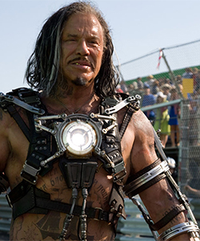

КИНОВСЕЛЕННАЯ
ФИЛЬМЫ
ГЕРОИ
ЗЛОДЕИ
КОНТАКТЫ
ОБРАТНАЯ СВЯЗЬ
☰
"ТАНОС"
"ЛОКИ"
"РОНАН"
"ХЛЫСТ"

"АЛЬТРОН"
"КРАСНЫЙ ЧЕРЕП"
![Танос (англ. Thanos) также известен под псевдонимами Безумный титан, Повелитель, Высший Мастер - вымышленный персонаж, суперзлодей из вселенной Marvel Comics. Дебютировал в Бронзовом Веке Комиксов, в комиксе Iron Man #55 (1973 года) и был создан писателем-художником Джимом Стерлином. Имя персонажа является выводом из имени Танатоса, олицетворения смерти в греческой мифологии. Танос появлялся во многих продуктах Marvel Comics, в том числе в анимационных фильмах, компьютерных играх, фильмах и игрушках.</br> Танос был рождён на одном из Спутников Сатурна, Титане. Его родителями были Вечные, Ментор и Сьюи-Сэйн. Танос оказался носителем гена Девиантов, и потому носил в себе черты внешнего вида родственной Вечным расы. Хотя с ним обращались честно, Танос стал очень заботиться о своём внешнем виде и изолировал себя, играя лишь со своим братом Эросом (Старфокс). Танос очень заинтересовался нигилизмом и смертью, и начал служить и, в конечном счёте, влюбился в физическое воплощение смерти, Госпожу Смерть. Став взрослым, Танос использовал знание бионики и мистицизм, чтобы стать самым сильным среди обитателей Титана, и стал часто упоминаться, как Безумный Титан. Желая впечатлить Госпожу Смерть, Танос собирает собственную армию из инопланетян и начинает ядерную бомбардировку Титана, что привело к миллионным потерям среди его расы. В поисках вселенского источника силы в форме Космического Куба, Танос прибывает на Землю. Во время приземления его корабль разрушает машину семьи, засвидетельствовавшей его прибытие. Для Таноса осталось неизвестным, что двое в машине выжили: дух отца был сохранён дедом Таноса, ставшим воплощением времени Хроносом, и получил новую жизнь, став Драксом Разрушителем, а дочь была найдена отцом Таноса, Ментором; она выросла и стала героиней Лунным Драконом. Танос в конце концов нашёл Куб и привлёк к себе внимание Госпожи Смерть. Пожелав, чтобы Куб сделал его всемогущим, Танос затем избавляется от него. Он заключает Хроноса и мучает героя Кри Капитана Марвела, который с помощью Мстителей и ИСААКА (супер-компьютера на Титане) в конце концов побеждает Таноса и уничтожает Куб.
Танос позже приходит помочь Адаму Уорлоку в войне против Магуса и его религиозной империи. В ходе этого союза Танос вынашивает план, как объединиться с Госпожой Смерть, втайне переливает энергию из Камня Души Уорлока и объединяет её с силой других Камней Бесконечности, чтобы создать оружие, способное уничтожить звезду. Уорлок вызывает Мстителей и Капитана Марвела, чтобы остановить Таноса, но план проваливается и Танос убивает Уорлока. Титан перегруппировывает свои силы и захватывает героев, которых позже освобождает Человек-паук и Существо. Таноса в итоге останавливает Уорлок, чей дух объединяется с Камнем Души и обращает Таноса в камень. Дух Таноса после показывается составившим компанию духу Капитана Марвела в стране Смерти.
Танос, в конце концов, был воскрешён и вновь собрал Камни Бесконечности. Он использовал камни, чтобы создать Перчатку Бесконечности, сделавшую его всемогущим, после чего стёр половину жизни во Вселенной, чтобы доказать свою любовь к Смерти. Это действие, а также несколько других, вскоре были обращены Адамом Уорлоком. Уорлок обнаруживает, что Танос всегда позволял себя победить, поскольку знал втайне, что не заслуживает абсолютной силы. Танос присоединяется к Уорлоку как часть Бесконечной Стражи и помогает ему победить сначала злую и добрую половины Адама, а также вылечить Тора от «боевого безумия».
Танос позже набрал команду суперзлодеев с Земли и поместил их под полевое руководство Гитара, чтобы они добыли робота, содержащего знания универсальной библиотеки. Танос использовал информацию, полученную из робота, чтобы сразить Тиранта, неудачное создание Галактуса. Будучи заточённым в альтернативной реальности, Танос использовал помощь брата Ка-Зара, Парнивала Хищного, и позже Халка, чтобы сбежать, хотя обе попытки были безуспешными. Танос, в конце концов, освободился и вступил в битву с Тором, в ходе которой Танос уничтожил планету Ригел-3.
Thanos vs Avengers
Позднее Танос использовал Тора и Генис-Велла (сына Капитана Марвела) против бога смерти Уолкера, попытавшегося ухаживать за Госпожой Смерть, и затем уничтожает божество после того, как Таносу отказали. Затем Танос изобретает план стать Всеотцом новой расы Богов, созданной им самим. Однако против него выступила бывшая участница Мстителей, Мантис, и её сын Куой, которому, по-видимому, было преначертано стать Небесным Мессией. Танос оставляет план после объединения с Госпожой Смерть для уничтожения «Рот», аберрации в глубоком космосе, вызванную любовью Таноса к Смерти. Танос также однажды провёл обширное исследование генетики, и после изучения многих героев и злодеев Вселенной клонировал их и смешал их ДНК со своим. Хотя позже он оставил проект, пять клонов выжили, версии Профессора Икс, Железного человека, Гладиатора, Доктора Стрэнджа и Галактуса. Шестая, неназванная версия Таноса также появляется, и оказывается, что инкарнации Таноса, которые сражались с Тором и Ка-Заром, были его клонами. Настоящий Танос — с помощью Адама Уорлока, Гаморы, Пипа Тролля, Человека-паука, Капитана Марвела и Доктора Стрэнджа — уничтожает оставшихся клонов.
Когда древнеегипетский фараон по имени Акхенатен использовал источник космической силы, чтобы захватить власть на Земле в настоящее время (убив большинство героев Земли в процессе), Танос использует военную хитрость в путешествиях во времени, чтобы победить его. Танос затем использовал артефакт, чтобы исправить действия Акхенатена и также исправить изъян во вселенной. Изменённый этим опытом, Танос рассказывает Адаму Уорлоку, что он больше не будет пытаться захватить Вселенную.
Танос решил искупить вину за разрушение Ригела-3 и соглашается помочь колонии Ригеланцев в эвакуации с планеты до того, как Галактус поглотит её. В ходе этой миссии Танос узнаёт, что Галактус собирает Камни Бесконечности в попытке положить конец его вселенскому голоду. Танос позже узнаёт, что Галактусом манипулировали, чтобы он выпустил на свободу космическую угрозу, известную как Голод, который поглощает целые вселенные. Несмотря на сопротивление Таноса, Галактус освобождает существо, но когда становятся ясны намерения этого существа, Галактус и Танос объединяются, чтобы уничтожить его.
По пути в Килн, межгалактическую тюрьму, Танос встречает Смерть, впервые заговорившую с ним. Смерть заявляет, что это стоит ухаживаний, но он должен предложить что-то другое, не смерти. В Килне Танос обнаруживает Стар-Лорда и воина Ши’ар Гладиатора, обоих в заключении, и Потустороннего (англ. Beyonder), который оказался в амнезии, поскольку решил принять форму смертной женщины. Танос сразился с Потусторонним и заставил его разум выключиться, оставив его силу заключённой в коматозном теле смертного. После этого Танос покинул Килн в компании Скрита, хаосмайта, освобождённого из тюрьмы, велев офицерам Килна поддерживать жизнь Потустороннего вечно, чтобы божество не смогло переродиться. Затем Танос встретил Падшего, бывшего Геральда Галактуса, победил его и полностью подчинил его сознание.
В ходе Аннигиляционной Войны Танос объединился с злодеем Аннигилусом. Когда Волна Аннигиляции уничтожила Килн, Танос послал Падшего проверить статус Потустороннего, чьё смертное воплощение погибло. До того, как Падший рассказал ему, Танос сталкивается с Тенеброусом и Эгидой, двумя древними врагами Галактуса. Танос убедит Тенеброуса и Эгиду присоединиться к Волне Аннигиляции, чтобы отомстить Галактусу, и они побеждают Пожирателя Миров и Серебряного Сёрфера. Аннигилус хочет узнать секреты Космической силы и просит Таноса изучить Галактуса. Как только Танос узнаёт истинную цель Аннигилуса — использовать Космическую Силу, чтобы уничтожить всю жизнь и остаться единственным выжившим, — он решает освободить Галактуса. Дракс Разрушитель убивает Таноса до того, как тот делает это, но обнаруживает, что Танос установил на этот случай устройство, позволяющее Сёрферу освободить Галактуса в случае, если Аннигилус предаст его. В ходе климатической войны с Аннигилусом Нова почти умер и увидел Таноса стоящим рядом с Госпожой Смерть.
Кокон, защищающий Вселенскую Церковь Истины, как оказалось, скрывал Таноса, выбранного Обливионом на роль нового Аватара Смерти. Воскрешённый до того, как его разум успел полностью сформироваться, Танос бездумно вошёл в неистовство, однако потом был схвачен Стражами Галактики. Танос притворился, что помогает Стражам против вторжения вселенной Рака (англ. Cancerverse) и после обнаружения его происхождения убивает альтернативную версию Мар-Велла, самопровозглашённого Аватара Жизни. Это вызвало коллапс вселенной Рака, в котором стражи Нова и Стар-лорд пожертвовали собой, чтобы заточить Таноса во взрывающейся реальности.](img/zlo/tan.jpg)
![Локи (англ. Loki) — персонаж вымышленной вселенной Marvel (и кинематографической вселенной Marvel), созданный на основе скандинавского бога Локи, сводный брат Тора. В разные периоды выступает как в роли суперзлодея (противостоит Тору и Мстителям), так и супергероя (участник команды Могучих Мстителей, личная серия комиксов «Локи: Агент Асгарда»). Локи сам по себе не был Асгардианцем, а был сыном Лафея, умершего правителя Снежных Великанов, древних врагов Асгарда. Много лет назад, когда Бор, правитель Асгарда, сражался с Великанами, он преследовал раненого гиганта, что привело его к могущественному волшебнику (это был замаскированный Локи из нашего времени). Он знал, что не может превзойти Бора в грубой силе, поэтому, застав его врасплох, колдун превратил его в снег. Сын Бора, Один, пришел как раз в тот момент, когда колдун исчез. Бор умолял Одина найти его.
Прошли годы, и Один не пытался спасти своего отца, управляя Асгардом вместо него и следуя за своими собственными мечтами. Сначала Бор попытался убедить Одина освободить его и наконец, Бор пообещал Одину, что он не будет его больше беспокоить, если тот возьмет себе сына падшего короля и вырастит его как своего собственного. Не прошло и недели, как Один сам возглавил Асгардианцев в битве против Снежных Великанов и убил Лафея, который был королем, в личной битве. После убийства Лафея Один нашел маленького ребенка, спрятанного внутри основной крепости Великанов. Ребенком был Локи, и Лафей прятал его от своих подданных, потому что боялся, что его осмеют (Локи был слишком маленьким для ребенка Снежного Великана). Один забрал ребенка, из-за того, что так хотел его отец и из-за того, что этот ребенок был сыном достойного противника. Он вырастил его как своего собственного сына, вместе со своим родным ребенком, Тором, что привело в действие события его собственной гибели. Что Один так никогда и не понял, так это то, что Бор, мучивший его из своей могилы, на самом деле был иллюзией, созданной Локи.
Loki 2
Локи, бог обмана
Локи, в отличие от Тора, оказался озорным ребенком и часто завидовал привязанности, которую Один оказывал его брату Тору. Когда-то еще в детстве Локи начал изучать Асгардианскую магию и науку, в обеих из которых он достиг больших успехов, в итоге став одним из сильнейших магов в измерении.
Локи хорошо известен за отрезание длинных, золотых волос возлюбленной Тора, Сиф. Тор заставил Локи восстановить их. Позже Локи использовал двух гномов, чтобы те отрезали Сиф волосы, но когда отказался заплатить, они сделали новые, черные волосы из ничего.
В подростковом возрасте Локи все еще пытался получить преимущество над Тором. Один послал Тора, Балдера и Сиф получить материалы для меча. Локи тайно последовал за ними, но когда злая богиня была готова атаковать их, он был вынужден предупредить группу.
Тем временем Один, так сильно любивший Тора, готовил ему величайший подарок. Когда Тору исполнилось восемь, его отец представил ему магический молот, Мьёлнир. Локи завидовал Тору и тогда уже показывал первые признаки зла. Именно из-за Локи, ручка молота была сделана слишком короткой (он вмешался на стадии создания Мьёлнира). Будучи мальчиком, Локи хотел себе силу Мьёлнира, который когда-то станет принадлежать Тору, и часто пытался украсть молот.
Все это оказало влияние на Локи. Он становился плохим все быстрее и быстрее – пока не стал настоящим злодеем. Его ненависть к Тору и желание управлять Асгардом проявились вместе с его колдовством и «проказами». В итоге он дал обет – стать самым могущественным богом в Асгарде и уничтожить своего брата Тора.
Локи лучше всего известен из-за борьбы с Тором и другими героями Вселенной Марвел. В частности с Мстителями, хотя он сражался и с многими другими. Однако в первую очередь Локи был врагом Тора.
Тор и Локи росли вместе, и Тор получил трон Асгарда. Локи же стал врагом общества. Он часто пытался заполучить трон Асгарда и совершал многочисленные преступления. В итоге его преступления выросли настолько, что сам Один вынужден был пойти на крайние меры. Он заключил Локи внутри дерева в качестве наказания за его деяния. Однако Локи, используя магию, сумел выбраться.
Недовольный он бродил бесцельно до тех пор, пока не нашел Элдреда, колдуна. Тот был невероятно опытен в использовании магии, особенно в черной. Элдред обучил Локи всему, что знал сам. Последний оставил своего учителя и нашел нового, способного увеличить его силу до немыслимых пределов – Суртура, огненного демона. Он обладал силой за пределами власти и особенно любил души. Тогда Локи использовал душу Элдреда. Таким образом, он заполучил всю его силу, его слуг и имущество.
Локи совершил множество подобных поступков. Он еще больше продвинулся в изучении черной магии и получил титул «бога зла» среди Асгардианцев. Также он встретил множество худших существ Асгарда, с которыми создал союзы. Ангербода была злой богиней, ставшей женой Локи. Их детьми были Змей Мидгарда, Волк Фенриса и Хела (она станет богиней смерти и врагом Тора). Также Локи женился на Сигин, заставив её с помощью магии поверить, что он был её мужем, Теориком.
Кроме того, произошло важное событие – Локи узнал о пророчестве – Рагнарёке. Было предсказано, что Локи приведет к разорению Асгарда. Он возглавит врагов Асгарда в войне против него, убьет Балдера и разрушит Асгард. Локи понравилась эта «идея» и он принял свою судьбу. Он часто пытался разрушить Асгард и вызвать Рагнарёк, но его останавливал Один. Однако планы Локи были настолько запутанными, что никто не мог утверждать, что за этим стоял он.
Тем временем его брат Тор стал высокомерным. Поклонение Мидгарда, лесть в Асгарде пока он был их королем, сделало его гордым и самоуверенным. Однажды во время сражения с Снежными Великанами Тор оказался на их территории. Это почти привело к войне. Один был настолько зол, что решил наказать Тора. Он создал для него смертное тело, Дональда Блэйка, удалил все воспоминания и силы Тора и заточил его внутри тела Блэйка.
Дональд Блэйк был счастливым обычным доктором. Он был заботливым и любящим; у него была семья. Затем на Землю прилетели Кронаны. Бежав от них, Блэйк попал в пещеру, где родился Тор. Там он нашел обычную деревянную трость, которая превратилась в Мьёлнир. В этот момент Дональд превратился в Тора и вернул себе воспоминания. Это означало, что он мог превращаться в Тора и обратно в Блэйка в любой момент, так что Тор снова был на Земле ,о чем узнал Локи. Естественно это были большие новости для злого бога – его надолго потерянный, худший старший брат был свободен и просил об этом. Локи использовал мощную магию, чтобы высвободиться из своей тюрьмы и отправился на остров. Там Локи совершил свое первое, самое значительное появление.
Локи отправился на Землю и нашел там невероятный источник разрушения, по силе равный Тору – Халка. Он использовал физические способности, чтобы замедлить Халка, заставив того поверить, что динамит лежит на железнодорожных путях. Халк разрушил эстакаду поезда, чтобы остановить «динамит» и удерживал пути на своих плечах, помогая поезду проехать. Однако машинист увидел лишь Халка и естественно пришел к выводу, что тот был в ярости. Машинист отправил сигнал бедствия. Локи перехватил его и сделал так, что это сообщение услышал только Дональд Блэйк, который мгновенно превратился в Тора. Железный Человек, Человек-Муравей и Оса также поймали сигнал.
Человек Муравей использовал свою сеть муравьев, чтобы найти Халка. Он был схвачен и работал в цирке в качестве силача. Человек Муравей быстро нашел его и заставил муравьев «заточить» Халка под землей. Тому удалось освободиться, и его встретил Железный Человек. Последний вместе с Человеком Муравьем объединил свои усилия против Халка, но так и не смогли победить его, и Халк убежал в пустыню.
Тем временем Тор понял, что за всем этим стоит Локи. Он получил разрешение от Одина и отправился к Асгардианскому острову, на котором скрывался его брат. Локи создал на пути Тора множество ловушек и прочих трудностей, но для Бога Грома (God of Thunder) это оказались пустяки. Наконец он встретились, в первый раз за прошедшие века. Локи создал заклинания, с которыми боролся Тор и смог уничтожить. Однако даже после этого у его брата остался трюк в рукаве. Он заключил сделку с троллями, жившими под землей. Он доставит им самого могущественного бога, если они «заполучат» его себе. Поэтому тролли утянули Тора под землю, но он использовал Мьёлнир, чтобы осветить все ярким светом. Подземные существа ослепли. Затем Тор победил Локи, захватил его и отправился с ним на Землю.
Между тем Халк и Железный Человек яростно сражались на заводе. Пока они сражались, показался Тор вместе с Локи. Он объяснил, что на самом деле это были проделки Локи. Халк атаковал Локи, но тот начал излучать какую-то энергию. Пока он пытался уничтожить Тора, он упал через люк и оказался в свинцовом танке. Пятеро героев начали праздновать победу и решили создать команду. Оса предложила название «Мстители». Таким образом Мстители были созданы целиком благодаря Локи.
Позже Мстители станут вторым величайшим врагом Локи, сразу после Тора. Также они станут Величайшими Земными Героями, и нападение Локи непреднамеренно привело к созданию этой могущественной команды.
Локи часто сражался с Тором, сам или используя «пешки», в период после образования Мстителей. Действия Локи были направлены на создание многих могущественных злодеев, которые противостояли Тору, Мстителям и другим героям. Среди его «пешек» были Поглощающий Человек, Разрушитель, Кобра, Чародейка и Палач, Лавовые Люди, Супер-Скрулл, Мистер Хайд, Создатель Погоды и Суртур. Эти злодеи сражались с Тором и Мстителями и были чрезвычайно успешными. В частности, Чародейка и Палач были одними из самых опасных врагов Мстителей долгое время.
Кроме того Локи планировал еще одну грандиозную атаку, пытаясь достичь свою конечную цель. Один управлял Асгардом и был настолько могущественным, что Локи никогда не смог бы противостоять ему в открытую, хотя остальные считали, что он пытался. Но Одину приходилось отдыхать во время Сна Одина какое-то время, чтобы восстановить свои силы. Локи пытался получить трон Асгарда, пока охрана Одина была обезврежена. Ему это удалось и он получил контроль на д Асгардом. Правда, он столкнулся с одной проблемой. У Асгарда было несколько могущественных врагов, которые были очень опасны. Потребовалось много умения и воли, и Локи понял, что это было труднее, чем выглядело на первый взгляд. Мангог и Суртур, которые были очень злы на Бога Вреда, вызвали очень много проблем и напугали Локи так сильно, что он уступил трон.
Локи также сделал несколько других попыток уничтожить своих старых врагов и заполучить силу в свои руки. Он объединился с Дормамму, безумным и могущественным правителем Темного Измерения, чтобы заполучить Глаз Зла. Это был мистический могущественный предмет, который дал бы ему силу за пределами его самых смелых фантазий (как Красный Череп и Космический Куб). По иронии судьбы Локи обманули Мстители и другая команда, Защитники. Однако, в отличие от Красного Черепа и Куба, Локи проиграл. Он также запустил прямую атаку на Мидгард, но был остановлен Тором и командой других героев, которые спасли Землю от Локи и Асгардианской армии.
В конечном итоге, Локи снова украл трон Асгарда и был побежден. Теперь Один был зол по-настоящему. Он лишил Локи его воспоминаний, создал для него тело бродяги и поместил туда его сознание, отправив Локи на Землю. Локи прожил некоторое время в этом обличье, пока не был спасен журналистом по имени Харрис Хоббс. Последний добрался до Асгарда, но Тор стер его воспоминания об этом. Мечта восстановить его воспоминания как-то достигла Локи и вернула ему память. Разъяренный, он смог вызвать Рагнарёк, убив Бальдра с помощью стрелы, но последний был возрожден.
Также Локи дал смертному те же силы, которые имел и Тор, так что он мог быть его помощником. Смертным был Рэд Норвелл. За это Локи был наказан, он обвинил во всем Одина и снова был изгнан.
Однажды Хела прокляла Тора. Он будет бессмертным, но не сможет излечивать свои раны. Локи узнал об этом и был доволен Хелой, которая «убила» Тора намного эффективней, чем когда-либо смог сделать сам Локи. Он послал Разрушителя, армию Снежных Великанов и жуткого Змея Мидгарда. Тор был избит до такой степени, что был превращен в кучу раздробленных костей и смятых органов, но все равно еще был жив. Мысленно он взял на себя контроль над Разрушителем, нашел Хелу, избил её и заставил снять проклятие. В наказание Тор отрезал Локи руку.
Однажды Сет и Демоны Смерти атаковали Асгард. В ужасной войне Сету удалось схватить Одина и заточить его внутри источника сил Сета – магической Черной Пирамиде. Локи и Тор объединились и спасли Одина, который выпустил всю свою ярость по отношению к Сету. Это был один из нескольких случаев, когда братья работали вместе. В другой раз Локи придумал сложный план, с помощью которого он намеревался управлять Землей и уничтожить Мстителей. Он собрал вместе Красный Череп, Магнето, Доктора Дума, Чародея и Мандарина и предложил им шанс управлять героями в сражениях, чтобы уничтожить их. Но на самом деле, Локи управлял всеми этими злодеями, заставив их думать, что они являются лидером, будучи Богом Вреда. Однако Тор узнал об этом и «выбил» из братца все плохое. В отместку Локи создал Три-Стража, но его уничтожил Человек-Паук, ставший на время Капитаном Вселенной.
Локи создал новый коварный план и по сравнению с его появлением в первом выпуске Мстителей, он был еще запутаннее. В частности, здесь Локи появляется в качестве бизнесмена, захваченного Мефисто, сражавшегося с Тором и Эриком Мастерсоном и владеющим не кем иным, как Воителем.
Во-первых, Локи принял облик бизнесмена Мидгарда и нашел Улика, тролля, Амору Колдунью и Команду Разрушителей (Крушитель, Шаровая Молния, Забивальщик, Бульдозер). Локи приказал им схватить Кевина Мастерсона, сына Эрика. Эрик был связан с Тором в его теле. Тор был зол на Локи, и даже в человеческой форме смог освободить Кевина. Как только он бежал, Локи выстрелил энергетическим зарядом по матери Кевина, Марси, просто чтобы повести себя, как болван.
Но Чародейка тайно обратилась против Локи. Она взяла под контроль тело другой смертной, Сюзан Остин – няньки Кевина. Находясь в теле Остин, Чародейка приняла удар на себя, за секунду до него выйдя из тела. Эта атака действительно вывела Тора из себя – Локи убивал невинных людей без причины, просто чтобы разозлить Тора. Ярость Бога Грома действительно «упала» на Локи. Тор «выкачал» жизненные силы Локи с помощью Мьёлнира. Оказалось, что это убило Локи. За это Тор был сослан в подсознание Эрика. Сам Эрик стал новым Тором, хотя взял себе имя Громобой. У него была личная серия комиксов, правда небольшая, в девяностых.
Тем временем Локи получил контроль над телом Одина, пока тот находился во Сне Одина. Он открыл новый вид удивительной силы, затем взял контроль над Асгардом. Он был занят решением. Дух Одина плыл вниз, в Царство Мефисто, что было довольно неплохим «уловом» для её нового обладателя, Мефисто.Души невинных были прекрасны, но душа Короля Богов была еще лучше. К счастью, Громобой и Сиф пробрались в Царство Мефисто и освободили дух Одина, вернув его в его тело. Мефисто просто взял себе Локи. Последний договорился с Плуто, богом ада. Локи попытается победить Геркулеса, если Плуто попытается сделать это с Тором. Мефисто был занят в это время и не обращал внимания на Локи, что было очень нехорошо, даже учитывая, что у него была его душа.
Локи пытался заставить Титана напасть на Геркулеса, но все было безуспешно. Так что он заставил Пламя атаковать Тора. Вместо этого он почти навредил Сигин, и Локи в итоге был вынужден спасти Тора от своего собственного приспешника. Локи все еще был заточен в Царстве Мефисто, откуда его вызволил Тор, чтобы тот помог ему сразиться с Новыми Бессмертными, связанными в набор доспехов – его тело больше не было. После этого Локи продолил нападать на Тора и Громобоя. Он даже имел в своем распоряжении Военную Машину, получив конце новое тело от Сета.
Но затем Воитель, новый Человек Муравей (Скотт Лэнг) и Женщина-Халк объединились против него, напомнив о Мстителях – и у него было даже больше проблем с ними, поэтому он прекратил бой.
После некоторого времени борьбы с Тором у Локи появился план по захвату абсолютной власти – Камней Бесконечности. Это была коллекция из семи могущественных камней. Если кому-либо удавалось собрать их вместе, то они давали своему владельцу всемогущество. Танос и Красный Череп пытались сделать это, но не смогли (хотя Череп позже заполучил Космический Куб).
Локи обнаружил, что Камни «плавали» в альтернативном измерении – Ультравселенной. Он отправился туда, чтобы заполучить Камни. Они уже принадлежали Ультрам, расе ультра могущественных сверхлюдей, коренных жителей Ультравсеелнной. У каждого из них был по Камню, и каждый был невероятно силен. Локи встретился с каждым из них и легко уничтожал, одного за другим. Никто из них не мог противостоять Богу Вреда. После убийства каждого из Ультров, Локи забирал Камень.
Он заполучил шесть из них, но затем понял, что чего-то не хватало. Локи не понял истинного смысла Камней и не знал, что нужен седьмой. Он потратил много времени в поисках, пока один из Старейшин Вселенной – Грандмастер не сказал ему, что нужен еще один Камень – Эго. Локи, Мстители и Ультрасила (герои того измерения) - все боролись за этот Камень.
Однако Локи не смог победить обе команды и в итоге потерял все Камни – его самую близкую возможность получить всемогущество. Униженный, он вернулся в родное измерение и был зол.
Тем временем Локи продолжал пытаться начать Рагнарёк. На протяжении всего этого времени он проводил различные действия для установки плана и уничтожения Асгарда. Тем не менее, благодаря усилиям Тора и Одина, он все топтался на месте.
После неудачи с Камнями Бесконечности Локи начал пытаться усерднее, и Один почувствовал, что Рагнарёк близок. Чтобы продлить их жизни, Один обманул Иггдрасиль, Мировое Древо, заставив его думать, что Рагнарёк уже произошел. Все Асгардианцы были лишены своих воспоминаний и личностей, взамен они получили личности смертных и были отправлены в Мидгард. Локи стал восточным бизнесменом по имени Цо Шунг, а Тор стал Джейком Олсоном, парамедиком. Рэд Норвелл нашел всех богов и собрал их вместе, давая им их личности. Локи вернул себе свою личность и боролся с Сетом, который пытался уничтожить всех Асгардианцев. В конце концов, все они вернули себе свое.
Однако настоящий Джейк Олсон был убит, и Тор использовал его имя и внешний вид в качестве тайной личности. Локи воскресил мертвое тело и использовал его для совершения преступлений, чтобы Тора арестовали, но он заточил Локи в теле, как две капли воды похожем на Джейка Олсона. Локи был отправлен в тюрьму.
К счастью для него, Локи был выпущен из тюрьмы как раз в тот момент, когда Суртур сумел убить Одина. Тор взошел на трон и все пошло на пользу Локи – он получил больше силы и увидел, как Тор поместил кусочки Асгардианской культуры на Землю. Но он все еще был злым и все еще верил в свою судьбу. В Рагнарёк.
Локи выковал другой молот из Уру, похожий на Мьёлнир, который он мог использовать для себя. Он начал другой план, чтобы попытаться и начать Рагнарёк и уничтожить Асгард. Тор остановил его, как и всегда до этого. Но он понял, что величайшая возможная честь в Асгарде – это умереть воином. Асгард был в петле, Локи нападал, Тор спасал; смерть, возрождение. Тор принял судьбу, в которой Локи уничтожал Асгард и начинал Рагнарёк – и он мог сделать так, что все в Асгарде умрут смертью воинов.
Но сначала он должен был получить свою собственную смерть, потому что если он позаолит целому измерению умереть, он сможет также отомстить своему величайшему врагу, который так долго его мучил. Плавным ударом Мьёлнира Тор «выбил» голову Локи. Конечно, тот был удивительно могущественным колдуном, и обезглавливание не убило его. Его голова все еще «жила», так что Тор взял её с собой, когда отправился в Асгард. Суртур был готов выпустить огромную армию, чтобы уничтожить Асгард ,если только Тор не остановит его. Тот позволил демону начать атаку, и Асгард был уничтожен. Но прежде чем Тор умер, он столкнулся с Теми, Кто Сидит Высоко в Тени. Их силы были ответственны за Рагнарёк, и Тор уничтожил их. Тогда Асгард умер, и Тор вместе с ним.
Что же касается Локи, что он мог сделать? Тор обезглавил его. Все, что он мог сделать – это сидеть и наблюдать, как его конечная цель – Рагнарёк – была проведена, а затем кричать, так как он был побежден в атаке. Последнее действие грустной и тревожной жизни Локи, если не сказать меньше.
Но даже если его последним действием был крик, так как его величайший план убил его, Локи все еще был главнейшей угрозой для Тора и Асгарда и даже в смерти, в конце – Локи победил.
Как и все «мертвые» Асгардианцы, Локи был возрожден в человеческой форме и заточен Бальдром, чтобы не дать Тору восстановить Асгард. Однако судьба припрятала маленький сюрприз – Локи был возрожден в теле женщины, и не просто женщины, а в теле Сиф, истинной любви Тора. Локи, по-видимому, посвятил себя помощи своему брату и бывшему врагу в его стремлении восстановить Асгард, но, зная Локи, у него, несомненно, был план, который позволил бы ему еще раз уничтожить своего брата. Из-за последних действий Локи Леди Сиф была последним Асом, заточенным в человеческом теле, и Бальдр обнаружил, что он истинный сын Одина, а не усыновленный. Позже Бальдр стал Принцем Асгарда. В отличие от жизни Локи, когда он был мужчиной, богиня, казалось, использовала скрытые истины, а не ложь чтобы закрутить её зловещие сети.
Локи пришла к Хеле, чтобы просить об одолжении. Она хотела снова стать мужчиной, пока она была на задании. Тогда Хела превратила её в мужчину, а Локи показал, что тело, которое он использовал, принадлежало Сиф. Локи был послан назад в то время, когда Асгардианцы сражались со Снежными Великанами. Он был атакован и убил одного из Великанов. Их лидер почувствовал их кровь, текущую по венам Локи и знал, что он один из них. Бор погнался за Великаном и там наткнулся на колдуна. Тот колдун убил его; это был Локи. Он попрощался с Бором и превратил его в снег. Затем Локи повлиял на самого себя, который здесь был ребенком, чтобы отомстить своему настоящему отцу и стать жестче. Отец Локи был убит Одином и на сцене появился молодой Локи. Он атаковал Одина, но был остановлен и взят Одином, который усыновил его. После того, как они ушли, появился нынешний Локи и с удовольствием ударил своего отца мечом. Он вернулся к Хеле и попросил её превратить его обратно в Сиф.
Локи присоединился к Заговорщикам Нормана Осборна. Для их сотрудничества и услуг Осборн даст им ресурсы для достижения их целей. Локи хотел Асгард, обратно в небеса, где он и должен быть.
Локи продолжила придерживаться своего плана по взятию Асгарда, воскресив Бора и исказив его видение, так что мир вокруг него казался деформированным и гротескным. Не зная, против кого они сражаются, Тор и Бор сражались друг с другом, пока Бор не пал под мощью молота Тора. Затем появились Бальдр и Локи и информировали Тора, что он только что убил своего деда. Затем Локи напомнил Бальдру, что он должен придерживаться законов Асгарда, поэтому Тор должен получить наказание в полном объеме за убийство члена королевской семьи. Как Принц Асгарда Бальдр был вынужден изгнать Тора из Асгарда навсегда. Выступая перед некоторыми Асгардианцами в пабе, Локи рассказал им, что есть другое место, где мог находиться Асгард, и это была Латверия, где правил Виктор фон Дум.
Локи планировал переместить Асгард в Латверию, так как Тор теперь не мог что-либо изменить. Локи и Бальдр встретились с Доктором Думом в его замке, чтобы обсудить их проблему. Пока слуги Дума обслуживали Асгардианцев, Бальдр, все еще не доверявший Локи и Думу, спросил у последнего, почему его слуги выглядят недоедавшими. Затем они обсудили перемещение жителей Асгарда в Латверию. Наконец, было решено, что все Асгардианцы, которые хотят переселиться в Латверию, должны будут пройти через созданный Локи портал. Некоторые Асы остались, но большинство последовало за Локи и Бальдром в Латверию.
Локи и Дум встретились в новом доме Асов, Латверии. Теперь Локи вновь вернулся к своему мужскому обличью, так как Тор смог отделить Сиф от тела старой, умирающей женщины. Локи рассказал Думу, что Асгардианцы любят Латверию, как мир, похожий обстановкой и погодными условиями, а также формой правления на Асгард. Локи добавил, что все остальные счастливы; тогда Дум спросил, а счастлив ли Локи. Тот с усмешкой ответил, что его счастье только начинается.
Доктор Дум и Локи все еще продолжали обсуждать их планы. Дум дал Локи маленькую армию Думботов, чтобы помочь убить его цель, которой являлся Дональд Блейк. Затем Локи приготовил для Дума свой подарок. Он разговаривал с Асом по имени Эндрик. Тот показал Локи свой меч и рассказал, что планирует вручить его своему сыну, несмотря на то, что у него не то что сына, даже любимой женщины на тот момент не было. Локи сказал Эндрику идти с ним и произнес заклинание, в результате чего Эндрик впал в глубокий сон.
В то время Билл шел, чтобы поговорить с Бальдром и на своем пути к нему услышал крик. Он посмотрел на то, что случилось в комнате, и подслушал разговор Локи и Дума. Локи использовал Эндрика в качестве пожертвования для Дума, так что тот мог попытаться использовать органы Эндрика. Все это было сделано для того, чтобы Дум смог сделать себя бессмертным, как и Асгардианцы. Затем Локи заметил Билла, пока тот следил за их разговором. Тогда он послал за ним трех Асгардианцев-разбойников. Билл пытался сражаться с ними, но его проткнул мечом один из воинов.
Когда вернулся бог хаоса по имени Чтон, Локи действовал быстро, чтобы устранить эту проблему. Она появилась перед некоторыми героями в облике Алой Ведьмы, собрав всех в Вундагоре. Мстители, не подозревавшие о трюке Локи, последовали указаниям фальшивой Ванды.
Её целью было с помощью Мстителей вывести Нормана из равновесия. Локи намеревался создать «трещины в броне Осборна» и постепенно «расширять» их. Пьетро Максимофф хотя и хотел увидеть и поговорить со своей сестрой, присоединился к Могучим Мстителям только после того, как обежал весь мир, ища её.
Однако Локи начала видеть в Пьетро и Кэсси растущие проблемы для своего плана, так как они искренне верили, что она и есть Ванда; для последней это была возможность мести за гибель своего отца. Она разбиралась с Пьетро, вырубив средства связи, пока он и СШАгент находились в Тибете, надеясь, что Пьетро умрет из-за чрезвычайной ситуации, о которой он сообщил до отключения связи. В этот момент её заметил Кэсси и попыталась предупредить остальных, но Локи произнесла заклинание, мешавшее Кэсси сказать что-либо плохое о «Ванде». Затем, она появилась перед Генри Пимом, называвшим себя Осой, и пыталась убедить его изгнать Кэсси из команды; Пим был готов дать второй шанс, начиная с их спасения вместе с Фантастической Четверкой.
Вскоре «Ванда» вновь столкнулась с Кэсси, когда благодаря магии Виккана, она появилась в Бесконечном Особняке Мстителей. Однако Клинт Бартон смог добраться до неё и поцеловать, после чего он сказал, что это не Ванда. Затем Виккан произнес заклинание и раскрыл личность Локи, заставив её возвести барьеры, чтобы они не смогли её больше призвать, тем самым отменив заклинание на Кэсси.
Асгард был атакован Снежными Великанами. Все боги находились в битве, как будто скоро наступит конец Асгарда. В конце концов, Тор отстоял Асгард. Он повалил могучего гиганта, который упал и разрушил стену Асгарда, которая стояла с незапамятных времен. Стена была разрушена, но это была весна, еще раз. На ветвях Иггдрасиля еще раз выросли золотые яблоки, для Асгардианцев. И только Чародейка имела власть собрать яблоки с великого дерева. Все боги получили мудрость и молодость, съев яблоки. Все, кроме Тора. Затем Хеймдалл заметил человека, идущего в направлении Асгарда. Он оказался каменщиком, который предложил Одину исправить разрушения, причиненные Великанами. Также он заявил, что восстановит стену в течение года, если взамен он получит кое-что. Ему не нужны были не богатства, ни сила, ему нужна была Чародейка. Локи поговорил с Одином, и они решили принять предложение. Однако они сказали, что у каменщика есть всего шесть месяцев. Все боги пришли к выводу, что эта задача непосильна для человека. Однако человек принялся за работу с угрожающей скоростью и в итоге почти закончил стену меньше чем за полгода. Ему оставался лишь один день до завершения работы. Взбешенный Один сказал Локи, что если тот не исправит положение, то Один навечно заточит его в камне. Тогда Локи превратился в кобылу, чтобы отвлечь коня человека. Всю ночь Локи «отвлекал» коня и на утро, каменщик не смог завершить восстановление стены. Один сказал человеку, что тот не выполнил свою работу в срок, но тот знал, что это дело рук Локи. Поэтому он начал угрожать Асгардианцам, что убьет их всех и принял свою истинную форму. Каменщик оказался Снежным Великаном, который был готов проклинать Асов. Пока он бился с Локи и Одином, Тор вернулся из своего недавнего путешествия и убил Великана, бросив в него Мьёлнир. Затем Тор приказал Локи вычистить его «беспорядок». Он прошел через Асгард, держа в руках головы нескольких Снежных Великанов.
Позже Локи был изгнан из Асгарда за еще одну попытку обмана. Локи бродил по Асгарду без еды или какого-либо направления. Казалось, что он путешествовал в снегах тысячи лет. Однажды над ним начал парить орел, который задавал ему вопросы. Он смеялся над Локи, увидев, каким слабым и отчаявшимся он стал. Орел предложил Локи сделку. Он даст ему еду в обмен на Чародейку. Локи согласился и обманом заманил Чародейку на вершину горы ,где, по его словам, находились золотые яблоки. Они поднялись на вершину, где их ждал Снежный Великан, который и был орлом. Затем он схватил Чародейку и забрал её с собой, чтобы та стала его королевой. Асгардианцы начали голодать, так как некому было собирать яблоки. Один понял, что здесь замешан Локи и вынудил его отправиться спасать Чародейку. Локи вернулся обратно в логово Великана и обнаружил там связанную Амору и спящего гиганта. Локи начал освобождать Амору, но в тот момент Великан проснулся и обнаружил, что Чародейки нигде нет. В конце концов, гигант поймал обоих и удерживал у себя в пещере, пока их не спас Тор, убивший Снежного Великана Мьёлниром. Позже Амора вернулась в Асгард, так что Асы снова могли пировать.
Локи схватил души его умерших прислужников, убитых Бальдром с целью самообороны. Используя их в качестве приманки, Локи встретился с Дзирами и победил их, взяв к себе в качестве рабов. Он предложил Мефисто взять их на 101 день. Договорившись с последним и своей дочерью Хелой, теперь Локи был свободен от оков смертности. Мефисто предоставил Хеле часть его ада (от полуострова Коварства до оврага Высокомерия на тысячу лет для восстановления подземного мира северного мистического измерения, Хеля. За этот маленький подарок Хела передала Локи книги Хеля, тем самым сделав его единственным по-настоящему бессмертным Асом. Трудно сказать, действительно стал ли он невосприимчивым к повереждниям или просто не будет стареть. Локи недавно был изгнан из Асгарда Бальдром за его действий в Латверии и участия в Осаде Асгарда.
Рогатый мастер вреда и безумия в последний раз был замечен, когда его атаковал безумный Мрак/Часовой над развалинами города Асгарда. Это действие могло быть способом подделать свою смерть. Его последними словами, казалось, были: «Мне жаль, брат». Учитывая сделку с Хелой разумно полагать, что он не попал в Хель.
После событий Осады Тор оплакивал смерть своего брата и решил воскресить его. Локи обрел новую жизнь в теле парижского карманника по имени Серрур, не зная кем он был или каким он стал. Вместо этого Серрур делал вид, что показывает карточные трюки, пока его сообщник крал их кошельки. Тор столкнулся с Локи в его новом облике, пока сообщник Серрура обокрал Тора, находившегося в человеческом обличье. Но Тор поймал обоих и понял, что Серрур и есть Локи. Тор вернулся с Локи домой, в разрушенный Асгард, как раз в момент прибытия беженцев Мирового Древа, бежавших от ярости Утана-Тота. Когда Один был возвращен из Лимба для борьбы с воинами «Десятого Мира», Локи сбежал, зная, что Один не одобрил бы его возвращения и разрушения, которое это за собой несомненно бы повлекло. Локи натолкнулся на Железного Человека и был спасен Тором, который защищал обманщика, руководствуясь своими собственными мотивами.
Для того чтобы избежать неодобрения со стороны граждан Асгарда, Локи объявил о своем намерении отправиться в мир людей и учить их пути, которые одобрил Тор. Но прежде чем он смог отправиться в его комнату залетела сорока, державшая в клюве ключ. Это привело Локи в тайные закоулки Асгарда, где он получил сообщение от спиритуального эхо самого себя, которое заявило, что смерть от рук Мрака было частью большей схемы смерти и возрождения, и что юный Локи был необходим для его завершения. Однако Локи отказался следовать этому пути и превратил дух самого себя в сороку, которую назвал Икол. Вернувшись на Землю, он стал свидетелем, как Один свалил с ног Тора.
Последний бросил вызов мудрости Одина в уничтожении Мидгарда в связи с открытием новости о возвращении Змея. Тор находился под стражей, пока Один собирал армию Асов, чтобы уничтожить все следы влияния Змея любой ценой. Тем временем Локи, не согласный с действиями Одина, был занят чисткой стойла коз Тора по приказу Вольстагга, что держало его подальше от неприятностей. Но самое главное, Вольстагг не давал Локи вмешаться в планы Одина. Икол убедил Локи, что если Один будет продолжать в том же духе, то все они умрут, поэтому Локи быстро убежал. Используя шерсть одной из коз, он спустился к корням Мирового Древа, чтобы задать вопросы норвежским женщинам, жившим там. Их мудрость заставила Локи плакать, потому что он не знал, является ли их путь верным. Он искал совета у Тора и ворвался в его камеру, прося о помощи. Локи спросил у своего брата, чтобы он сделал, если бы знал, что для того, чтобы остановить худшее зло, ему пришлось бы сделать нечто плохое и что если бы это стоило ему всего. С ответом Тора Локи решил освободить одного из Волков Хеля и связать их с ним при помощи уздечки коз Тора. Он рассказал, что нуждается в помощи еще одного «персонажа», прежде чем отправиться в измерение Хелы.
Когда-то Локи начал «изготавливать» невозможный план. Стравливать Мефисто и Хелу. Другими словами, играть «посередине». В конце Локи заполучил в свои руки Дизиров, мертвого бога войны Тира и Броню Разрушителя. В качестве дополнительной меры предосторожности Хела посылает свою служанку Лии вместе с уничтожением Змеев «Анти-Асгарда». Но команда Локи или «Магический Секретный Действующий Отряд» как его называл Локи, это было не более чем отвлечение от истинных планов Локи. Чтобы поговорить с Суртуром, Дизир убивает Волка Хеля и Локи направляет его в Лимб. Поняв, что он мертв, Волк решил убить Локи, но был съеден Суртуром. Локи заключил с демоном соглашение, в результате которого он получил щепку Сумеречного Меча Суртура. Используя её, Локи планировал переписать асгардианский миф и предсказать смерть Змея от рук Тора. Сумеречный Меч оказался действительно самой могущественной ручкой в мире.После этого Локи и Икол вернулись в Асгард, где выпустили Уничтожителя, вместе с которым вернулись в Нью-Йорк. Там Тир и Дизиры стали свидетелями возвышения цитадели Змея. Находясь на Уничтожителе, Локи сказал остальным, что они собираются разрушить её.](img/zlo/lok.jpg)
![Ронан Обвинитель (англ. Ronan the Accuser) - радикальный представитель расы кри. Будучи свирепым, геноцидным милитаристом, Ронан попытался искоренить Ксандарианцев, заключив сделку с Таносом, предлагая ему сферу в обмен на уничтожение Ксандара. После долгого Путешествия за Сферой, Ронан наконец получил её, и решил, вместо того, чтобы отдать сферу, оставить её силу себе. Используя эту силу, он напал на Ксандар, но был побеждён и убит Стражами Галактики. Ронан был жестоким и упёртым членом расы кри, который занимал влиятельное положение в военных рядах данной расы. Являясь сторонником Таноса, Ронан тренировал двух приёмных дочерей полководца, Гамору и Небулу, делая их свирепыми воинами. Во время своих многочисленных действий через галактику Ронан убил Ховат и Камарию, жену и дочь Дракса Разрушителя. Из-за этого Дракс потерял рассудок и совершил множество убийств по всей галактике.
Во время попытки Таноса завладеть Камнями бесконечности Ронан, желающий уничтожить расу ксандарианцев, согласился помочь Таносу с поиском Сферы в обмен на уничтожение Ксандара. Ронан выяснил, что Сфера спрятана на Мораге и отправил туда своего подчинённого Кората Преследователя вместе с небольшим отрядом сакааранцев, чтобы они добыли её из Храма-хранилища.](img/zlo/ronan.jpg)
![Альтрон (англ. Ultron) был искусственным интеллектом-миротворческой программой, созданной Тони Старком из расшифрованного кода, полученного из скипетра Локи, и воссозданного Тони Старком и Брюсом Беннером с целью защиты Земли от внутренних и внешних угроз. Владея множеством тел и личностью Старка, он считал само человечество величайшей угрозой миру на Земле и попытался создать технологическую сингулярность, совершив геноцид против него.
При первоначальной помощи близнецов Пьетро и Ванды Максимофф, Альтрон на короткое время разделил Мстителей, но был брошен своими союзниками, когда они обнаружили правду о его геноцидных намерениях. В одиночку, он попытался использовать устройство, состоящее из вибраниума и технологий читаури, чтобы воссоздать событие массового вымирания, которое уничтожило динозавров. Ему это почти удалось, но его планы были предотвращены, а сам он был уничтожен Мстителями.](img/zlo/alt.jpg)
![Иоганн Шмидт (англ. Johann Schmidt) был главнокомандующим отделом ГИДРА, подразделением нацистского СС, занимающегося специальным оружием - современным воплощением древнего общества ГИДРЫ. Будучи блестящим учёным, он быстро поднялся по ранговой лестнице нацисткой элиты и стал доверенным лицом самого Адольфа Гитлера. Тем не менее, его желание стать сверхчеловеком привело к тому, что он проверил сыворотку суперсолдата на себе, что превратило его в ужасного Красного Черепа (англ. Red Skull). После того, как он завладел таинственным тессерактом и его невообразимой мощью, он решил бросить Третий рейх и править миром в одиночку. Тем не менее, в то время, когда бушевала Вторая мировая война, его планам пришёл конец от руки единственного суперсолдата союзников, Капитана Америка.](img/zlo/kras.gif)